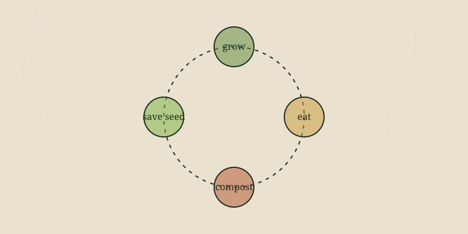

Every gardener hits the moment when everything ripens at once and you can't possibly eat it. That glut is the whole point of a survival garden — but only if you can carry it into the lean months. Here are the preservation methods worth knowing, roughly in order of how easy they are to start.
Cold storage (easiest)
Some crops store for months with no processing at all — just the right conditions. Winter squash, potatoes, sweet potatoes, onions, garlic, and apples keep for weeks to months in a cool, dark, ventilated space. A 'root cellar' can be as simple as an insulated closet, a basement corner, or a buried tote in cold climates.
Drying / dehydrating
The oldest preservation method. Removing water stops spoilage. Herbs, peppers, tomatoes, beans, and many fruits dry beautifully. You can use a dedicated dehydrator, an oven on its lowest setting, or in a dry climate, the sun and a screen. Dried food stores for months to years and takes almost no space.
Canning
Canning seals food in jars and heats it to kill spoilage organisms. There are two kinds, and the distinction is a safety matter, not a preference:
- Water-bath canning — for high-acid foods only: fruits, jams, pickles, tomatoes with added acid.
- Pressure canning — required for low-acid foods: vegetables, beans, meats. A water bath cannot reach the temperature needed to make these safe.
Fermenting
Fermentation uses beneficial bacteria to preserve food and create things like sauerkraut, kimchi, and pickles, while adding gut-healthy probiotics. It's low-tech, low-energy, and forgiving once you learn the basics — salt, submersion, and patience.
Freezing
The easiest modern method if you have reliable power: blanch vegetables briefly, cool, bag, and freeze. The catch for resilience is that it depends entirely on electricity — a long outage empties a freezer fast. Good for convenience, weaker for true self-sufficiency.
Written by Jordan Polasek, founder of Texas Roots, from his greenhouse in El Campo, Texas. Free to share. If this helped, the best thanks is to grow something or pass it along.